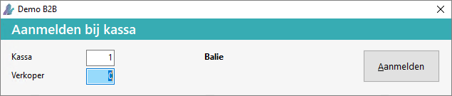
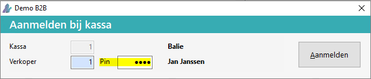
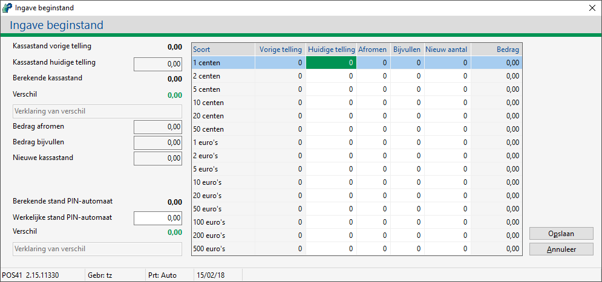
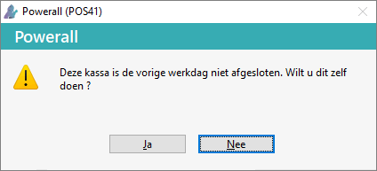
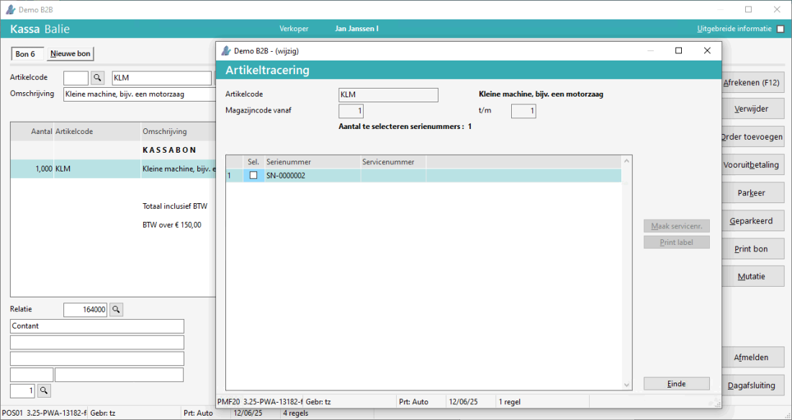
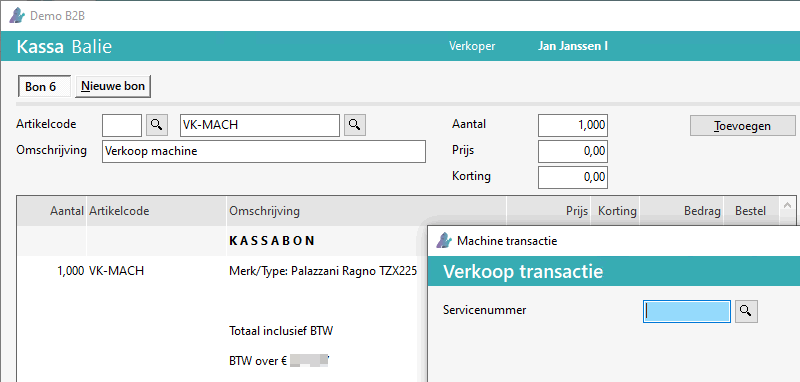
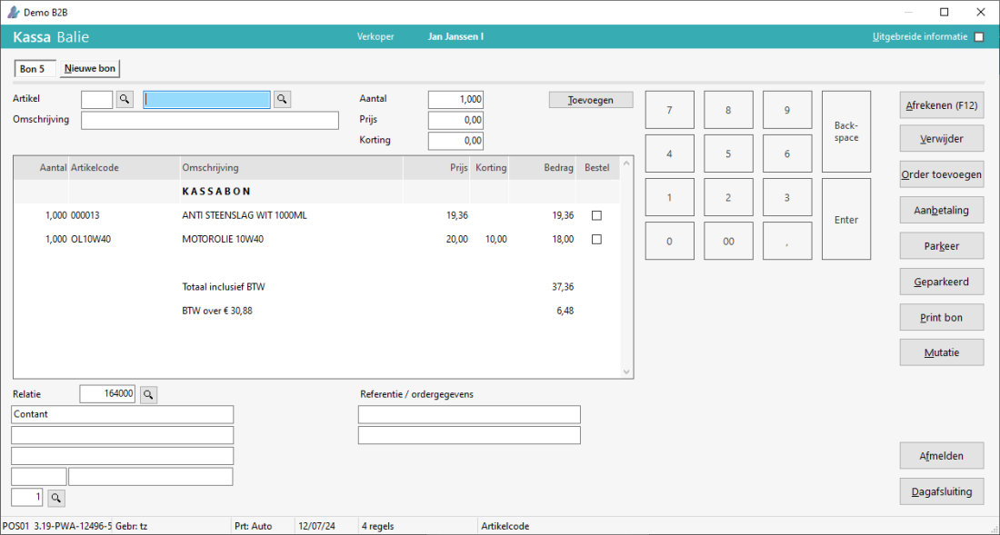
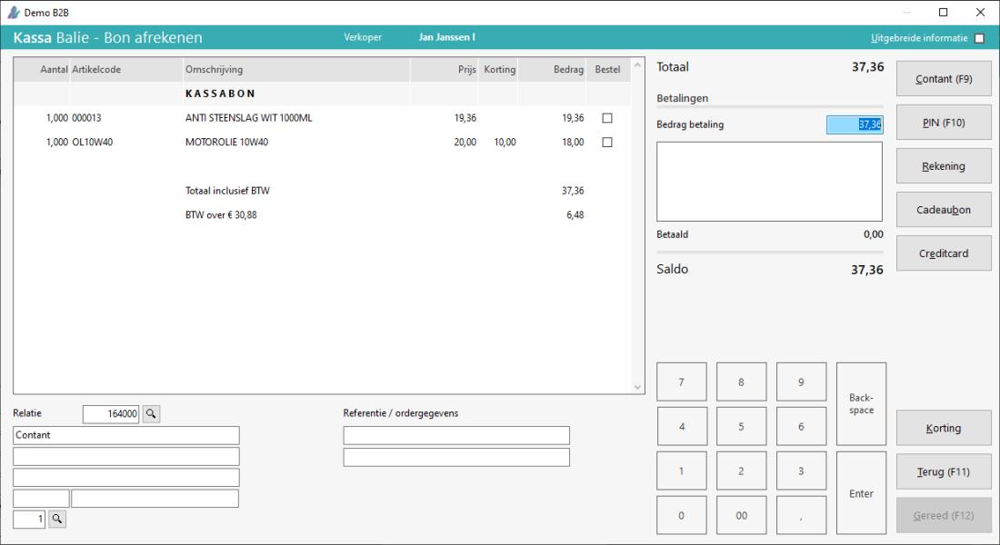

Ga naar Invoeren kassabonnen (FKK).
- Het scherm Aanmelden bij kassa verschijnt.
-
Geef de kassa en verkoper in.

-
Een pin-code kan opgegeven worden instelling:

-
 Klik hier voor meer informatie over het aanmelden met een Pin-code:
Klik hier voor meer informatie over het aanmelden met een Pin-code:
Om de pin-code te gebruiken moet het volgende ingevuld zijn:
- Bij Onderhoud personeelscodes voor de betreffende verkoper de pin-code.
- De pin-code kan bestaan uit 1 of meerdere cijfers, maximaal 8.
- Bij Onderhoud kassa's moet het veld aanmelden met pincode op ja staan (voor deze kassa).
- Bij Onderhoud personeelscodes voor de betreffende verkoper de pin-code.
- Kies voor de knop Aanmelden.
Bij de eerste aanmelding verschijnt eerst het scherm Ingave beginstand.
-
Geef hierbij de beginstand van de kassa op.

-
Kies voor de knop Opslaan. De beginstand van de kassa is opgeslagen.
-
Klik hier voor meer informatie over de melding: Deze kassa is de vorige werkdag niet afgesloten. Wilt u dit zelf doen?:
Als de kassa de vorige dag niet (goed) afgesloten is, verschijnt de volgende melding bij inloggen.

De volgende actie worden uitgevoerd bij:-
Ja, verschijnt het scherm Ingave eindstand.
-
Nee, de kassa wordt automatisch afgesloten, met de melding De vorige werkdag is voor kassa X afgesloten.
-
Geef vervolgens het artikel in met het aantal, prijs of korting.
Tip: Vul bij artikel alleen een k in, om de (kontant)relatie te wijzigen.
Door **<aantal> in het veld artikel in te geven, kan je snel het aantal van de laatst toegevoegde bonregel wijzigen.
Om een (kleine) machine toe te voegen, vanaf versie 3.25, doorloopt u de volgende stappen:
-
Geef het (kleine) machine artikel in.
-
Het scherm Artikeltracering verschijnt bij een serienummer artikel / Kleine machine.
-
Selecteer het serienummer (SN).

- Kies voor de knop Einde
-
-
Het scherm Verkoop transactie verschijnt bij een machine.
-
Geef het servicenummer en de overige gegevens in.

- Kies voor de knop Akkoord.
-
-
- De (kleine) machine is toegevoegd.
- servicenummer
- Er kan alleen een verkoop machine ingegeven worden.
- Kleine machine:
- D.m.v. de knop Serienummers kunnen de SN's bekeken worden.
- Als er geen SN geselecteerd is, verschijnt de melding: Geen correct aantal serienummers gekoppeld voor artikelcode <KL> (regel x).
Kies voor de knop Toevoegen.
-
Het artikel wordt toegevoegd.
Kies voor de knop Afrekenen of F12.

Het scherm Bon afrekenen verschijnt.

Afrekenen van een factuur:
Tip: Korting is alleen mogelijk bij de ingegeven artikelen, niet bij toegevoegde orders.
Indien gewenst kan de relatie nog gewijzigd worden.
-
Bij prijsafspraken verschijnt er een melding Wilt u de prijsafspraken van deze relatie toepassen?
-
Kies de gewenste betalingswijze:
-
Contant of F9
Afronding contant instelling met kassa dagoverzicht bijv.
-
PIN of F10
-
Rekening (Er wordt slechts een bon aangemaakt, deze gaat met de normale facturering mee.)
-
Cadeaubon
-
Creditcard (Deze betalingen worden meegeteld bij de 'Berekende stand PIN-automaat', ter controle.)
-
Of Korting op de bon.
-
Bij het scherm Korting toepassen kan er een bedrag of percentage ingegeven worden.
-
Bij Toepassen, wordt er een regel met de korting toegevoegd op de kassabon.
-
Bij Betalingen wordt de betalingswijze toegevoegd.
-
Om de betaalwijze te verwijderen, dubbel klik op de betaling en bevestig deze met Ja.
-
-
Kies voor de knop Gereed of F12.
-
De kassabon wordt afgedrukt (eventueel met kassa-bon selectie),
een nieuwe bon verschijnt.
-
-
Of
Kies voor de knop Terug of F11.
Kies voor de knop Afmelden. (Dit kan ook automatisch na <x> minuten.)
 (
({kind=link}
{kind=link}
{kind=link}
{kind=link}
{kind=link}
{kind=link}